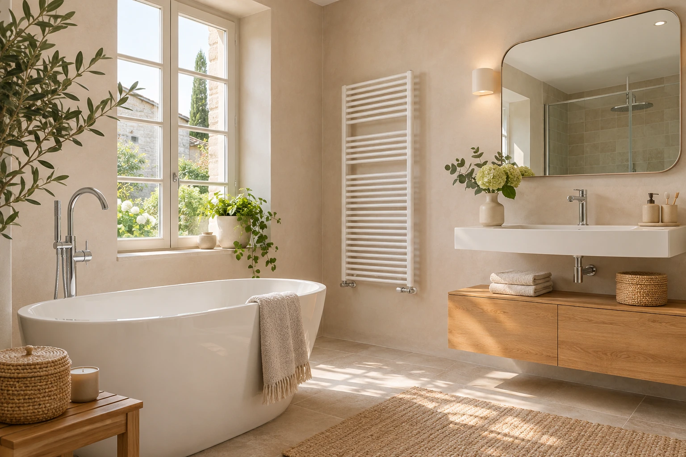

02SALLE DE BAINS
Un espace à votre image
Nous créons et installons vos salles de bains : meubles, baignoires, douches et robinetterie. Nous échangeons sur la configuration de votre pièce et vos habitudes pour préparer un aménagement cohérent, y compris pour les personnes en situation de handicap.
Parler de mon aménagement